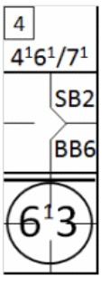
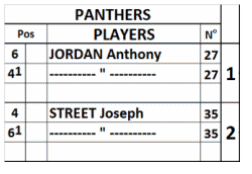

Ce type de changement consiste simplement en une permutation des positions défensives des joueurs, sans qu'aucun d'eux ne quitte le jeu pour être remplacé par un autre.
ATTENTION: Bien que le nom du joueur puisse être remplacé par des signes de répétition ("), le numéro du maillot DOIT TOUJOURS être répété.
|
Dans l'exemple donné, Jordan et Street changent de position défensive, passant respectivement de la deuxième base et à l'arrêt-court. C'est ainsi qu'un tel changement défensif est noté. |
 |
Tout changement de position défensive doit être signalé en traçant une ligne horizontale sur la feuille de scorage de l’équipe adverse, au-dessus de la case correspondant au frappeur suivant, pour indiquer que les positions de jeu sont modifiées à partir de ce moment.
| Parallèlement, en haut de la feuille, à côté du numéro de la
manche, les nouvelles positions défensives doivent être indiquées en inscrivant les numéros des positions
modifiés suivis d'un exposant 1 (ou 2, 3, etc., si plusieurs changements ont eu lieu à ce poste). Cela
signifie qu'à partir de ce moment, les actions défensives impliquant ces deux joueurs seront notées non
pas avec les numéros 4 et 6, mais avec les numéros
|
 |
ATTENTION: Notez que les performances offensives sont toujours inscrites sur la même ligne, puisque l'ordre de passage au bâton ne change pas.
SUGGESTION: Utilisez la feuille de l'annexe 7 pour avoir un aperçu sur papier des différents numéros de maillot pour chaque poste.